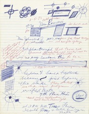
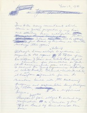
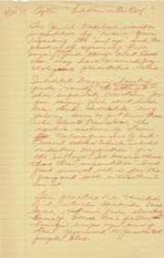
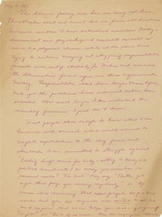
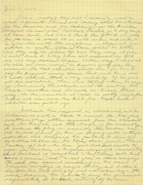
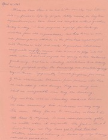
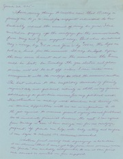
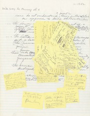

| Name | Last modified | Status |
| ↵ Go to parent directory | ||
| 📄 (un)recording.txt | 05-30-2026 | 🔓 |
| 🗃️ broadcasting.zip | 05-30-2026 | 🔓 |
| 👉 indexing.html | 05-30-2026 | 🔓 |
| 📁 parent-folder/ | XX-XX-XXXX | 🔒 |
| 🖥️ revealing-betraying-inflicting.pdf | XX-XX-XXXX | 🔒 |
You cannot see the records. The Internet Archive's BookReader UI presents a black void spanning across the browser window.
Okay, fine. Scroll down to the DOWNLOAD OPTIONS. Click the hyperlink (4 original) to download the item. Unzip the folder. Now you have a folder containing an .SQLITE file, an .XML file, and a .JPG file (the thumbnail).
Wait, go back. I've let my impulses—my desire to read, to possess, to collect—direct me to capture the downloadable assets before reviewing the file index.
Click SHOW ALL. There. Eleven locked files: .PDF, .TXT, something called IMAGES.ZIP, more.
The 424 files in the "Marion Stokes Journal" collection are listed in a gallery by thumbnail.
The thumbnails are specific and unique to each item: perforated for spiral-bound journals and five-ring binders, sun-damaged, stained, folded, occasional evidence of doodling        
The images are 180x284 pixels and almost entirely illegible except for stray words like "Thursday." Even if you could read them, most of the thumbnails only picture fragments from each entry.
You can't look at the journal entries, so you look at the architecture of the paper's digital preservation. The metadata for each item in the collection includes the donor, the republisher operator (associate-jackie-jay), the time and date of the entry's addition, the documenting camera (Camera Sony Alpha-A7r), the item's scanning location (San Francisco), the size of the corresponding (locked) items, and on and on. Only one item includes a note from the archivist.
Marion Stokes was a recorder. (See: Matt Wolf's documentary.) Her life was dedicated to gathering and preserving information. Her Betamax and VHS tapes exist (for now). Her records exist (for now). The archival index exists (for now).
I emailed Patron Services at the Internet Archive to ask about the locked items. They reply:
"All I can let you know is that [the Journal collection] is currently publicly unavailable."
Allow me to tell a story in parallel. Marion Stokes (née Butler) was born in Germantown, Pennsylvania, in 1929—nearly two years after W2XB started experimental broadcasts from the General Electric facility in Schenectady, New York. She grew up in a working-class family, raised by distant family members as a foster child. Throughout the first few decades of Marion's life, television sets gradually became smaller, more portable, and more ubiquitous. By the early 1960s, over 90 percent of American households had a television.
Live broadcasts in the home could blatantly contradict official narratives, starting with the Korean War (1950—53) and escalating with the Vietnam War (1955—75). Marion would have started working as a librarian for the Free Library of Philadelphia during this time.
By 1960, Marion was elected Philadelphia chair and Executive Secretary for the Fair Play for Cuba Committee (FPCC) in Pennsylvania and was being courted for leadership by the Communist Party of the United States of America. In April 1960, she married Melvin "Mickey" Metelits, an elementary school teacher involved in many of the same grassroots left-wing organizations and political efforts.
The Philadelphia Tribune (notably the oldest continually published African-American newspaper in the United States, from 1912–2001) published an article titled "Librarian Loses Position: Planned Visit to Cuba" on June 3, 1961. Marion had resigned with the intent to visit (and defect to) Cuba with her husband and unborn child but, ultimately, they were unable to make the trip. When she returned and reapplied for her position, the Central Library informed her that she was "no longer acceptable." Marion believed, and would maintain, that her application was rejected due to her affiliation with the FPCC.
John F. Kennedy, the 35th president of the United States, was assassinated by former U.S. Marine Lee Harvey Oswald on November 3, 1963, at 12:30PM Central. In 1963, there were only three broadcast television networks in the United States. For four days, all three channels suspended regular programs and commercials for non-stop live coverage—from the assassination to the state funeral. (This was a time when TV went "off the air".)
Earlier in 1963, Lee Harvey Oswald had started an independent branch of the Fair Play for Cuba Committee in his native New Orleans. (Oswald was the branch's only member; it had never been chartered by the national organization.) Members of the FPCC, like Marion, had already been monitored for years at this point by the CIA and the FBI's COINTELPRO program.
In 1965, a confidential informant to the FBI describes Marion as follows:
"MARION METELITS, Negro, is an unemployed housewife, who formerly worked as a non-professional librarian at the Free Library of Philadelphia. She is a heavy smoker and an irregular eater. She weighs "next to nothing" and is "always tired." She has full charge of a son, MICHAEL METELITS by MELVIN METELITS, white, Jewish (from whom subject has since separated)."
"METELITS takes her Party work much more seriously than she does anything else. She is an "anxious type" who worries to no effect."
The Federal Communications Commission's fairness doctrine, introduced in 1949, allowed controversial issues of public importance to be aired as long as they fairly reflected differing viewpoints. It did not require equal time for opposing views, as long as multiple sides were presented. For a woman like Marion—a divorced single Black mother with Communist ties—this doctrine meant that her voice could be heard. From 1968 to early 1971, Marion participated in and eventually co-produced a Sunday morning public access panel discussion show called Input. The show was broadcast on the local Philadelphia CBS Network affiliate, WCAU-TV10, and produced by the Wellsprings Ecumenical Center.
This was a space to connect academics, artists, religious leaders, and community organizers through thoughtful conversation on topics like prison reform, psychiatry, women's rights, reparations for slavery, genetic engineering, and more. When the show started, the conversation would already be in progress and would continue even after the closing credits.
In the late 1960s, it was standard practice to reuse (and record over) broadcast tape reels. The VCR wasn't introduced for home consumer video recording until 1976. Many documents associated with the show's production (including letters to panelists, discussion questions, notes, and seating charts) are available on the Internet Archive. The "Input" collection doesn't include all of the episodes that aired—but it is through Marion's own archival instincts that any remaining recordings exist at all. Trevor von Stein, an Internet Archive volunteer, writes in the collection notes:
"This footage has not been seen by the public for nearly 45 years and may be the only surviving visual materials of many of these people contemporary to the period of their activism."
"The Internet Archive thanks Michael Metelits, Mrs. Stoke's son, for making this collection available. It's Mrs. Stokes' personal vision that saw the original Ampex 1" tape broadcast reels preserved, then converted to Betamax L-500 tapes at the outset of the technology in the late 1970s."
These videos have now survived the transitions from Ampex to Betamax to MPEG-2, h.264 and Ogg Vorbis. (In 2014, Trevor von Stein put together an incredible Research Collection for the episodes with an episode guide, production notes, biographical details on panelists, and more.)
Marion's recording project began with the Iran hostage crisis in November 1979. Before 1980, network television stations would broadcast 30- to 60-minute news programs once or twice daily. The hostage crisis changed that. Walter Cronkite began closing every show with the number of days the hostages had been held captive. Daily updates on the hostages became a regular part of the media landscape. (The news program Nightline, which still airs on weeknights from 12:37 to 1:07AM Eastern, began as The Iran Crisis—America Held Hostage: Day "xxx" in 1979.)
Her son, Michael, explains to the Guardian that the Iran hostage crisis "was when [my mother] became obsessed with the way stories were reported and how they changed. I was 18 at the time and it struck me as strange, but my mother was strange for her whole life." One year after the crisis, Ted Turner launched the first 24-hours news network. The fairness doctrine was abolished in 1987.
Marion's archive of televisual history spans from 1979 to the date of her death in 2012. There are 71,716 tapes in her collection. The last remaining manufacturer of videocassette recorders ceased production in 2016.
Did you know that "index" originally referred to the index finger? The word "index" is derived from the Latin index, meaning "one who points out." (See: ☞ or the manicule.) Index's definition eventually shifted to include any indicator, sign, or marker.
I understand this to be true because I read a paper by Hans Wellisch—a librarian, Library and Information Science educator, and indexer—about the etymological origins and uses of the word index. The word is derived from indicare ("to make known or reveal" or "to divulge or betray") which itself is closely related to indicere ("to proclaim, inflict, or declare [war]").
In the last section of "Index: the word, its meaning, history and uses", Wellisch lists "facetious, derogatory, and otherwise unclassifiable" uses of the word index. The derogatory terms include: index-hunter (1751), index-learning (1728), and index-raker (1876). I like these words, even though I've struggled to learn more about them (because I haven't bought a subscription to the Oxford English Dictionary).
NB: Did you know you can borrow the Oxford English Dictionary (1933) on the Internet Archive? ("Not stuffing my margin, as Index-rakers do, with Quotations of Divines, Philosophers, Lawyers, Historians, etc." Robert Henry Dixon, 1793.)
In building the first web server at CERN, Tim Berners-Lee followed the logic of a library system: a directory. (I'd tell you more about the story but I'm not buying a subscription to Medium.) The logic and impact of the index, as explored in Dennis Duncan's Index, A History of the, has been criticized from the Printing Revolution to the search engine. In both the 18th and 21st century, there has been a growing fear that the index will kill curiosity in favor of summarial or symbolic knowledge.
Thus, the index-raker.